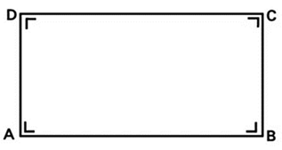

Kembali


2
Luas persegi Panjang
Mengenai luas persegi panjang

Bu Tani memiliki kebun berbentuk persegi panjang. Bu Tani ingin
menanam sayuran di kebunnya, tetapi dia membutuhkan bantuan
untuk menghitung luas kebun agar bisa menentukan jumlah bibit
yang perlu dibeli. Sayangnya, Bu Tani hanya tahu panjang dan
lebar kebunnya, tetapi tidak tahu cara menghitung luasnya.
Bisakah kalian membantunya?
PERTANYAAN :
a. Bu Tani memiliki kebun berbentuk persegi panjang dengan
panjang 12 meter dan lebar 8 meter.
b. Siswa diminta untuk membantu Bu Tani menghitung luas kebunnya
agar bisa membeli bibit dengan jumlah yang sesuai.
Luas persegi panjang merupakan luas daerah dalam yang dibatasi oleh persegi panjang.

Persegi panjang diatas mempunyai panjang p= AB=DC dan
lebar l=BC=AD.
Maka rumus luas persegi panjang adalah :
Keterangan :
K = keliling
p = panjang
l = lebar
Setelah kalian memahami materi, ayo nyanyikan lagu ini bersama teman sekelasmu.
Berdiskusi
1. Buatlah kelompok terdiri dari 3 siswa
2. Siapkan buku tulis untuk menjawab soal yang sudah disiapkan
3. Tuliskan nama dan nomor absen setiap anggota
4. Kemudian presentasikan hasil erja kelompokmu di depan kelas
Di sebuah desa, seorang ayah ingin membuat kebun sayur di
halaman belakang rumahnya yang berbentuk persegi panjang.
Ayah meminta bantuanmu untuk menghitung luas kebun agar
bisa menentukan jumlah pupuk yang dibutuhkan.
PERTANYAAN :
Hitunglah luas kebun tersebut.

Siti memiliki sebuah kebun berbentuk persegi panjang.
Panjang kebun tersebut adalah 12 meter, dan lebarnya 8
meter. Siti ingin menanam bunga di seluruh kebunnya.
PERTANYAAN :
a) Berapakah luas kebun Siti?
b) Jika setiap meter persegi kebun membutuhkan 5 bibit
bunga, berapa banyak bibit bunga yang diperlukan Siti
untuk menanam bunga di seluruh kebunnya?
Sebuah taman berbentuk persegi panjang akan ditanami
rumput. Panjang taman tersebut adalah 12 meter, dan
lebarnya 8 meter. Rumput yang digunakan bisa menutupi
seluruh taman.
PERTANYAAN :
a) Berapakah luas taman tersebut?
b) Jika harga penanaman rumput adalah Rp25.000 per
meter persegi, berapa biaya yang diperlukan untuk menutupi
seluruh taman dengan rumput?
c) Pak Agus hanya memiliki uang Rp2.000.000. Apakah
uang Pak Agus cukup untuk menutupi seluruh biaya penanaman
rumput? Jika tidak cukup, berapa kekurangan uangnya?